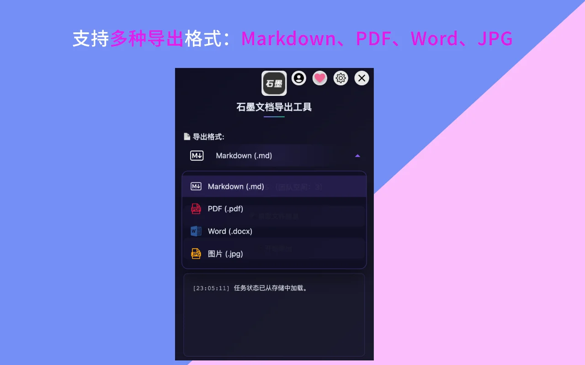
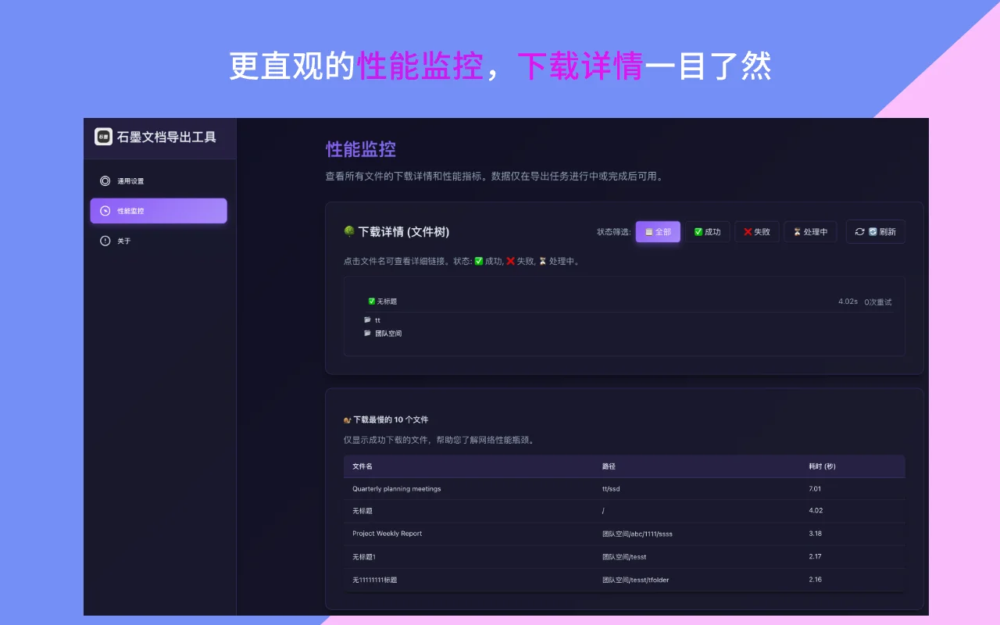

- 快捷键：掌握
Ctrl+B(加粗)、Ctrl+K(链接) 和/(斜杠命令)，效率直接翻倍。 - 模板库：不要从零开始，利用会议记录、周报等预设模板。
- 团队空间：集中管理文档，统一权限，从根本上解决找文档难的问题。
你有没有这种感觉：明明每天都在用石墨文档，但总觉得效率不够高？看别人操作起来行云流水，自己却还在点来点去找功能？
其实，石墨文档有很多隐藏的高效功能，掌握它们可以让你的工作效率提升3倍以上。我在过去3年里深度使用石墨文档，总结出了这10个最实用的技巧。不夸张地说，它们彻底改变了我的工作方式。
技巧一：快捷键操作 - 告别鼠标依赖症
💡 效率提升指数：⭐⭐⭐⭐⭐
学会快捷键，编辑速度至少提升3倍。我统计过，使用快捷键后，完成同样的文档编辑任务，时间从30分钟缩短到10分钟。
说实话，刚开始用快捷键的时候我也觉得麻烦，总想用鼠标。但坚持了一周后，我就完全离不开它们了。
必须掌握的基础快捷键
这些是我每天用上百次的快捷键：
Ctrl/Cmd + B- 加粗文本：强调重点内容Ctrl/Cmd + I- 斜体文本：标注专业术语Ctrl/Cmd + U- 下划线：突出关键信息Ctrl/Cmd + K- 插入链接：快速添加引用Ctrl/Cmd + Z- 撤销：手滑救星Ctrl/Cmd + Shift + Z- 重做：撤销的撤销
进阶快捷键
掌握这些，你就是团队里的效率之王：
/- 斜杠命令：这是最强大的功能！输入/后可以快速插入各种元素Ctrl/Cmd + /- 显示快捷键列表：忘记快捷键时的救星Ctrl/Cmd + Shift + 8- 无序列表：快速创建列表Ctrl/Cmd + Shift + 7- 有序列表：自动编号Ctrl/Cmd + Alt + 1/2/3- 设置标题级别：快速调整层级Ctrl/Cmd + F- 页内搜索：在长文档中快速定位
📌 实战技巧
我的建议是：每周只学3个新快捷键。不要一次学太多，容易忘。用一周时间让这3个快捷键成为肌肉记忆，下周再学新的。一个月后，你就是快捷键高手了。

使用快捷键可以大幅提升编辑效率
技巧二：斜杠命令 - 一个键解决90%的操作
💡 效率提升指数：⭐⭐⭐⭐⭐
斜杠命令是石墨文档最被低估的功能。它能做的事情，比你想象的多得多。
在文档中任意位置输入 /，会弹出一个命令面板。你可以通过它快速插入：
/h1/h2/h3- 快速创建各级标题/table- 插入表格（还能指定行列数）/image- 插入图片/code- 插入代码块/todo- 创建待办事项/quote- 插入引用块/divider- 插入分割线
我特别喜欢用 /table。以前插入表格要点好几次鼠标，现在直接 /table 3x4 就能创建一个3行4列的表格。
斜杠命令的隐藏用法
很多人不知道，斜杠命令还支持模糊搜索：
- 输入
/图可以找到"插入图片" - 输入
/dai可以找到"代码块" - 输入
/列可以找到各种列表选项
这意味着你不需要记住精确的命令，只要记住大概的关键字就行。
技巧三：模板库 - 不要每次都从零开始
💡 效率提升指数：⭐⭐⭐⭐
我统计过，使用模板可以节省50%的格式调整时间。更重要的是，它让文档看起来更专业。
石墨文档有个容易被忽略的宝藏功能：模板库。很多人创建文档时习惯从空白页开始，然后花大量时间调整格式。这其实是在浪费时间。
常用模板类型
- 会议记录模板：包含时间、参与人、议程、决策事项等标准字段
- 周报/月报模板：规范的工作总结结构
- 项目计划模板：完整的项目管理框架
- 产品需求文档（PRD）：专业的需求文档格式
- 竞品分析模板：系统的分析框架
- OKR模板：目标管理工具
创建自己的模板
更进阶的用法是：把你常用的文档保存为模板。
步骤很简单：
- 打开你常用的文档格式
- 点击右上角"..."菜单
- 选择"保存为模板"
- 下次创建文档时就能直接使用
我把自己的会议记录、周报、项目文档格式都保存成了模板。现在创建这些文档，点一下就搞定，格式完全统一。
选对了格式，文档就成功了一半。了解不同文档格式的最佳适用场景。
使用模板可以快速创建专业文档
技巧四：协作技巧 - 让团队效率翻倍
💡 效率提升指数：⭐⭐⭐⭐⭐
石墨文档的协作功能是它的核心竞争力。用好了，可以替代大部分邮件和即时通讯。
评论和@提醒
这是我团队用得最多的功能：
- 选中文本添加评论：鼠标选中任意文本，点击右侧的评论图标，就能针对这段内容留言
- @提醒成员：在评论中输入
@加同事名字，他会收到通知 - 评论串联：可以在评论下继续回复，形成讨论串
- 标记为已解决：处理完反馈后，可以标记评论为"已解决"，方便跟进
我们团队现在的协作流程是这样的：
- 产品经理写好PRD，@所有相关人员
- 开发和设计在文档里直接评论提问
- 产品经理在评论里回复
- 确认无误后标记为"已解决"
这样做的好处是：所有讨论都留在文档里，以后查找非常方便。不像微信聊天，过几天就找不到了。
⚠️ 避坑提示
评论不要用来讨论太复杂的问题。如果一个评论串超过5条回复，建议拉会议当面讨论，或者在即时通讯工具里详聊。文档评论适合快速确认和简单讨论。
实时协作
多人同时编辑一个文档时，你能看到：
- 谁在线（右上角会显示头像）
- 谁在编辑哪一段（会有彩色光标标识）
- 实时的编辑同步（不需要刷新）
我们开会的时候经常这样用：会议主持人共享屏幕，所有人一起在文档里记录。谁补充内容，谁添加待办事项，实时可见。会议结束，纪要也就完成了。
技巧五：版本历史 - 你的时光机
💡 效率提升指数：⭐⭐⭐⭐
版本历史救过我无数次。删错了内容？改乱了格式？想看昨天的版本？都能一键恢复。
石墨文档会自动保存所有的编辑历史。点击右上角的"历史版本"按钮，你可以：
- 查看所有历史版本：精确到分钟
- 对比不同版本：看看谁改了什么
- 恢复任意版本：一键回到过去
- 命名重要版本：给关键节点打标签
版本管理最佳实践
我的使用习惯：
- 重大修改前先命名当前版本：比如"修改前的版本"
- 定期给里程碑版本打标签：比如"V1.0终稿"、"客户确认版"
- 出问题时先看版本历史：看看是谁在什么时候改的
- 恢复版本后立即检查：确保恢复的是正确的版本
📌 真实案例
有一次，我们的产品规划文档被实习生不小心删掉了一大段内容。幸好有版本历史，我10秒钟就恢复了。如果没有这个功能，可能要花几个小时重写。
技巧六：搜索功能 - 长文档快速定位
💡 效率提升指数：⭐⭐⭐⭐
在几十页的文档里找一句话，用滚动可能要找5分钟，用搜索只要5秒。
基础搜索
快捷键 Ctrl/Cmd + F 打开搜索框：
- 输入关键词，回车跳转到下一个匹配
- 支持高亮显示所有匹配项
- 显示匹配数量（如"3/10"表示当前是第3个，总共10个）
高级搜索技巧
- 搜索+替换：
Ctrl/Cmd + H可以批量替换文本 - 大小写敏感：搜索框有个"Aa"按钮，可以区分大小写
- 全词匹配：避免搜"项目"时匹配到"子项目"
我处理长文档时的习惯：先用搜索定位到相关章节，再仔细阅读。这样效率高很多。
强大的搜索功能帮助你快速定位内容
技巧七：文件夹管理 - 告别混乱
💡 效率提升指数：⭐⭐⭐⭐
文档多了之后，找东西就成了大问题。合理的文件夹结构能让你3秒找到任何文档。
推荐的文件夹结构
我用过很多组织方式，最后发现这个结构最高效：
📁 我的文档
├── 📁 正在进行的项目
│ ├── 📁 项目A
│ │ ├── 📄 需求文档
│ │ ├── 📄 技术方案
│ │ └── 📄 会议记录
│ └── 📁 项目B
├── 📁 已完成项目（按年份归档）
│ ├── 📁 2024
│ └── 📁 2023
├── 📁 团队共享
│ ├── 📁 产品规范
│ ├── 📁 技术文档
│ └── 📁 会议纪要
└── 📁 个人笔记
├── 📁 学习笔记
└── 📁 想法收集文件夹管理技巧
- 不要超过3层嵌套：太深了找起来反而麻烦
- 用emoji标识：在文件夹名前加emoji，更容易识别
- 定期归档：完成的项目移到"已完成"文件夹
- 统一命名规范：比如日期统一用"2025-01-21"格式
- 善用收藏：常用文档添加到"收藏夹"
⚠️ 常见错误
不要建太多文件夹。我见过有人建了上百个文件夹，结果找东西时要在文件夹之间来回跳转。记住：文件夹是为了分类，不是越多越好。
技巧八：权限管理 - 保护你的文档安全
💡 效率提升指数：⭐⭐⭐⭐
合理设置权限，既能方便协作，又能保护敏感信息。这是很多人容易忽视的。
权限类型详解
- 可编辑：可以修改文档内容，适合核心团队成员
- 可评论：只能添加评论，不能编辑正文，适合审核人员
- 仅查看：只能阅读，不能做任何修改，适合外部分享
分享链接技巧
石墨文档的链接分享有很多隐藏选项：
- 设置密码：保护敏感文档
- 设置有效期：链接自动过期，避免长期暴露
- 限制复制：防止内容被随意传播
- 禁止下载：只能在线查看
- 查看访问记录：谁看过你的文档，一目了然
我的使用原则：
- 内部文档：直接添加成员，设置可编辑或可评论
- 对外分享：用链接，设置为仅查看+密码保护
- 临时分享：设置7天有效期
- 敏感文档：禁止下载+限制复制
技巧九：团队空间 - 团队协作的中枢
💡 效率提升指数：⭐⭐⭐⭐⭐
如果你们团队超过3个人，强烈建议使用团队空间。它能解决90%的协作问题。
团队空间的优势
- 集中管理：所有团队文档在一个地方，不会丢
- 统一权限：新人加入团队，自动获得所有文档访问权
- 成员离职处理：移除成员时，文档不会丢失
- 批量操作：可以批量移动、删除、导出文档
- 团队模板：共享团队专属的模板
团队空间最佳实践
我们团队的设置：
- 按部门创建文件夹：产品、开发、设计、运营各一个
- 建立文档索引：在根目录放一个"文档导航"，列出重要文档的链接
- 定期清理：每季度整理一次，归档过期文档
- 规范命名：统一文档命名规则，方便搜索

团队空间让多人协作更加高效
仅仅使用团队空间还不够，你需要一套完整的管理方法论。点击查看最佳实践。
技巧十：导出备份 - 数据安全的最后一道防线
💡 效率提升指数：⭐⭐⭐⭐⭐
云端数据再安全，也比不上本地备份。定期导出，是对自己负责。
导出格式选择
石墨文档支持多种导出格式，每种都有适用场景：
- Markdown（.md）：适合技术文档，纯文本格式，便于版本控制
- PDF：适合正式文档，格式固定，不会乱
- Word（.docx）：适合需要进一步编辑的文档
- 图片：适合快速分享，但不能编辑
批量导出的重要性
单个文档导出很简单，但如果你有几百个文档需要备份呢？
手动导出的痛点：
- 一个个点击，耗时耗力
- 容易漏掉某些文档
- 文件夹结构丢失，下载后一团乱
- 团队空间的文档更难导出
备份策略建议
我的备份频率：
- 重要项目文档：每周备份一次
- 日常工作文档：每月备份一次
- 完整备份：每季度做一次全量备份
遵循3-2-1备份原则：
- 3份数据（原件+2份备份）
- 2种存储介质（云端+本地）
- 1份异地备份（移动硬盘或其他云盘）
番外：移动端使用技巧
💡 效率提升指数：⭐⭐⭐
移动端不只是看文档，用好了也能高效工作。
石墨文档移动端的实用功能：
- 离线编辑：没网也能工作，联网后自动同步
- 语音输入：开会时快速记录
- 扫描文档：用相机扫描纸质文档，自动转为文字
- 快速分享：一键分享到微信、钉钉
- 通知提醒：被@时即时推送
我的移动端使用场景：
- 通勤路上查看文档，做简单修改
- 会议中用语音快速记录要点
- 随时回复团队的@提醒
总结：从新手到高手的进阶路径
看完这10个技巧，你可能会觉得有点多。别担心，不需要一次全学会。
我建议的学习路径：
📌 第1周：基础快捷键
每天练习加粗、斜体、插入链接这3个快捷键，让它们成为肌肉记忆。
📌 第2周：斜杠命令
开始用 / 命令插入各种元素，逐步替代鼠标操作。
📌 第3周：协作功能
在团队文档中使用评论和@提醒，体验高效协作。
📌 第4周：高级功能
探索版本历史、权限管理、团队空间等功能。
一个月后，你就能掌握这些技巧，工作效率会有质的飞跃。
记住：工具是死的，人是活的。这些技巧的价值，取决于你如何结合自己的工作场景使用它们。多实践，多总结，找到最适合自己的工作流。
⚠️ 最后提醒
再好的云工具，也要定期备份。不要把所有数据完全托付给任何一个平台。建立自己的备份习惯，才是对工作成果最好的保护。